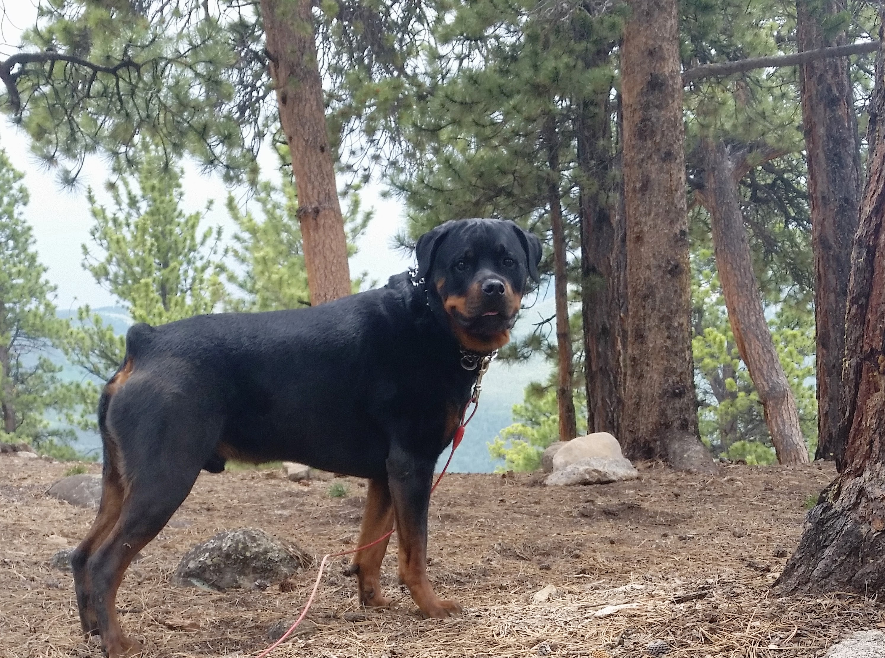

About Me
Hi, my name is Tricia and I am very excited to be a part of the first gSchool Fort Collins class! I am a curious person that loves to learn and try new things. I relocated from Florida to Denver back in June of 2013 and just recently moved to Fort Collins this past summer. Colorado has exceeded my expectations since moving. There is endless opportunity for outdoor activities, an exciting and innovative startup and tech industry, and some of the most genuine and accommodating people I have ever met. Joining the Galvanize community seemed like the perfect next step for exploring all that is great in the world.
I graduated from Florida State in 2012 with a degree in Finance and Management Information Systems. It took only one summer of working in Finance for me to realize that it was not for me. After that, I turned to the IT industry and never looked back. The constant change and opportunity for improvement interests me and keeps me excited about my work. Before deciding to become a Web Developer, I worked for DISH Network as a systems analyst on their Sling TV product. In this role I worked closely with our development team, and as fate would have it, 4 of them were gSchool graduates.
Hobbies & Interests
Horseback riding has been my outlet and my hobby for most of my life. I ride hunter jumpers and have a 6 year old Dutch Warmblood named Ever.
After graduating college, I adopted my now 3 year old Rottweiler named Rambo. He is exceptionally spoiled and a terrible excuse for a guard dog.

I like to stay active and am on a mission to explore everything Colorado has to offer! My boyfriend Chris and I spend a lot of our time camping and hiking.